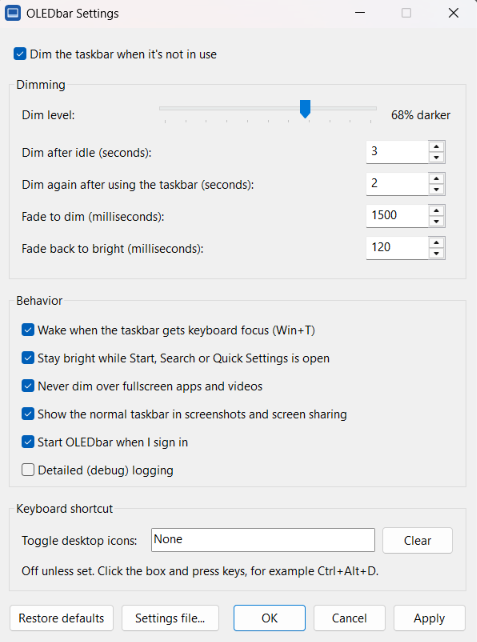

For OLED screens on Windows 11
Your taskbar never sleeps.
Now it can dim.
OLEDbar fades a dark, click-through layer over the taskbar when you're not using it, and brings it back the moment you are. It helps reduce the risk of OLED burn-in without hiding your taskbar.
Bright
Static pixels add up.
The taskbar sits in the same place, at the same brightness, for thousands of hours. On OLED, that's what burn-in feeds on.
0 hours of use
Illustration of a grey test screen, not a measurement. Real-world results depend on the panel, brightness and how you use it.
Small footprint
Tiny by design.
One 685 KB file that idles at about 1 MB of memory. Protecting your screen shouldn't cost you resources.
- ~1MBmemory while idle
- 0 extra dependencies
- 0 network connections
- No runtime to install
- No background service
- No updater
- No telemetry
- No admin rights
Try it here
Tune it to your eyes.
Same controls as the real settings panel. Drag the slider and watch the taskbar.
Bright

Stays out of your way
Smart about when to step back.
-
No injection
Doesn't patch or hook Explorer. It only draws a click-through layer above the taskbar.
-
Fullscreen aware
Steps aside for fullscreen apps and videos, and while the taskbar is auto-hidden.
-
Invisible in screenshots
Keeps the dim layer out of supported screenshots and screen sharing, by default.
-
Pauses when locked
Goes quiet while the PC is locked or the screen is off. Pause it from the tray anytime.
-
Wakes instantly
Mouse on the taskbar, Start, Search or Win+T: it's bright again in about 120 ms.
-
Desktop icons shortcut
An optional hotkey shows or hides desktop icons, for a cleaner, darker desktop.
Give your taskbar a break.
Windows 11 22H2 or later · x64 · v0.2.1
Releases are currently unsigned, so Windows may show a warning. Checksums are in SHA256SUMS.txt on the release page.
Questions
Does it work with auto-hide?
Yes. The overlay hides while the taskbar is hidden and can resume when it reappears.
Does it affect fullscreen apps?
By default, OLEDbar hides its overlay when it detects a fullscreen app or video.
Does it show up in screenshots?
Normally not. By default, OLEDbar asks Windows to exclude the dimming overlay from screenshots and screen sharing. You can change this in Settings.
Does it support multiple monitors?
Yes, but only the primary display's taskbar is dimmed. Additional taskbars are not dimmed yet.
Does it need admin rights?
No. Both the per-user installer and the portable app run without administrator rights.
Is it signed?
Not yet. Windows may warn about or block unsigned apps. If Smart App Control blocks OLEDbar, wait for a signed release.
Does it send data anywhere?
No. OLEDbar makes no network connections. Settings and logs stay in %LOCALAPPDATA%\OLEDbar.